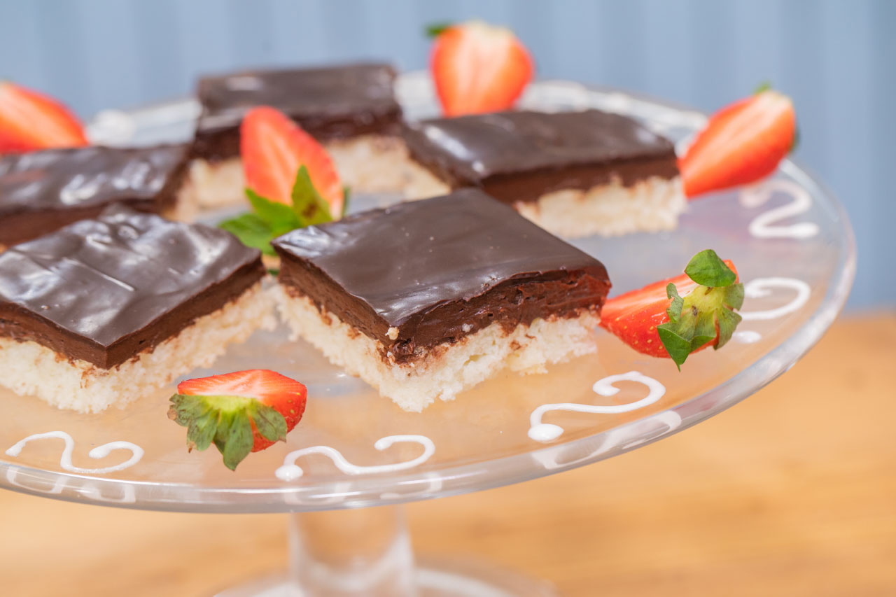
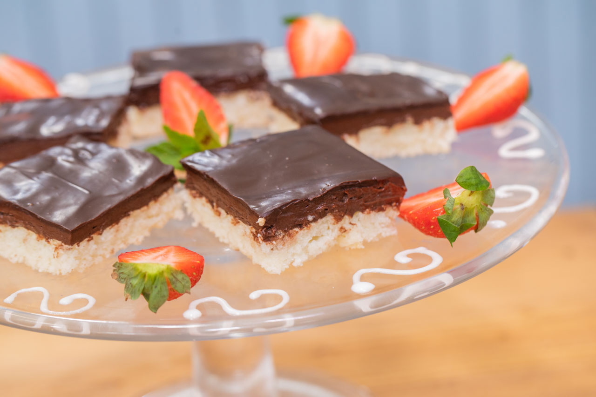

„Jednou mamka přinesla z práce recept na výborné řezy. Byla natěšená, jak je bude péct a jak nám budou chutnat. Přesně dodržela postup, ale když řezy dodělala a nechala vychladnout, nešly ji nějak nakrájet. Koukali jsme na ni, jak je nešťastná, že se jí nedaří. Když nám přinesla po nedělním obědě buchtu, která byla spíš než krájená, trhaná, tak jsme na to ani neměli chuť. Ale taťka maminčino pečení miloval a proto byl první, kdo ho ochutnal. Dlouho jsme ho v tom nenechali a pustili se do toho taky. Buchta zmizela z tácu tak rychle, že mamka nestačila koukat. Byla úžasná, čokoládu jsme měli až za ušima, ale co bylo hlavní, byla jako žvýkačka. Něco při pečení se nepovedlo, ale to vůbec nevadilo. Doteď, když mamka plánuje nějakou oslavu, ptá se nás, co má upéct a jednohlasně křičíme: ‚Tu žvejkavou!‘. I když jsem vyzkoušela i jiné výborné a složitější řezy, tyto byly jasná volba.“
Korpus
7 bílků
300 g moučkového cukru
200 g kokosu
5 lžic hladké mouky (lze dát i polohrubou)
špetka soli
Nejdříve si ušleháme sníh, potom přidáme cukr, kokos, špetku soli a nakonec zlehka mouku. Těsto nalijeme na plech vyložený pečicím papírem a pečeme v troubě na 170 °C pár minut.
Krém
120 g cukru krupice
3 celá vejce
30 g kakaa
250 g másla
Ve vodní páře vyšleháme cukr, vejce a kakao do hustší kaše. Necháme vychladit a vmícháme máslo. Krém natřeme na kokosový korpus a hustě zalijeme polevou.
Čokoládová poleva
čokoláda na vaření
máslo
rum+ kokos, nebo jahody na dekoraci
Polevu vytvoříme rozpuštěním čokolády na vaření, do které dáme kousek másla a trochu rumu. Povrch řezů můžeme posypat kokosem, nebo jen čerstvými jahodami.
 
